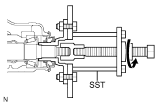
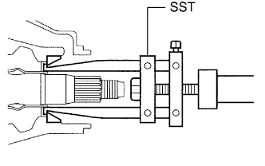
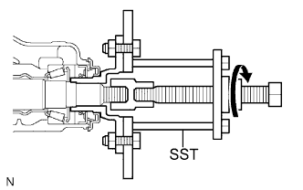
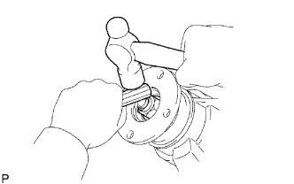

САЛЬНИК ЧАШКИ ПЕРЕДНЕГО ДИФФЕРЕНЦИАЛА > ЗАМЕНА |
| 1. СНИМИТЕ ЧАШКУ ПЕРЕДНЕГО ДИФФЕРЕНЦИАЛА В СБОРЕ |
Снимите чашку переднего дифференциала в сборе (Нажмите здесь).
| 2. ОТВЕРНИТЕ ГАЙКУ СОЕДИНИТЕЛЬНОГО ФЛАНЦА ПЕРЕДНЕЙ ВЕДУЩЕЙ ШЕСТЕРНИ |
С помощью SST и молотка освободите накерненную часть гайки.
Удерживая соединительный фланец с помощью SST, отверните гайку.
| *a | Поверните |
| *b | Удерживайте |
| 3. СНИМИТЕ СОЕДИНИТЕЛЬНЫЙ ФЛАНЕЦ ПЕРЕДНЕЙ ВЕДУЩЕЙ ШЕСТЕРНИ В СБОРЕ |
|  |
С помощью SST снимите соединительный фланец.
| 4. СНИМИТЕ САЛЬНИК ЧАШКИ ПЕРЕДНЕГО ДИФФЕРЕНЦИАЛА |
 |
Снимите сальник с помощью SST.
| *1 | Сальник |
| *2 | Маслоотражатель |
| 5. СНИМИТЕ МАСЛООТРАЖАТЕЛЬ ВЕДУЩЕЙ ШЕСТЕРНИ ПЕРЕДНЕГО ДИФФЕРЕНЦИАЛА |
| 6. СНИМИТЕ ЗАДНИЙ КОНИЧЕСКИЙ РОЛИКОВЫЙ ПОДШИПНИК ПЕРЕДНЕЙ ВЕДУЩЕЙ ШЕСТЕРНИ |
 |
С помощью SST снимите роликовый подшипник (внутренний).
|  |
С помощью SST выбейте роликовый подшипник (наружный).
| 7. СНИМИТЕ МАСЛОНАКОПИТЕЛЬНОЕ КОЛЬЦО ПЕРЕДНЕГО ДИФФЕРЕНЦИАЛА |
С помощью отвертки и молотка выбейте маслонакопительное кольцо.
| 8. СНИМИТЕ РАСПОРНУЮ ВТУЛКУ ПОДШИПНИКА ВЕДУЩЕЙ ШЕСТЕРНИ ПЕРЕДНЕГО ДИФФЕРЕНЦИАЛА |
 |
Снимите распорную втулку подшипника.
| 9. УСТАНОВИТЕ РАСПОРНУЮ ВТУЛКУ ПОДШИПНИКА ВЕДУЩЕЙ ШЕСТЕРНИ ПЕРЕДНЕГО ДИФФЕРЕНЦИАЛА |
Установите новую распорную втулку подшипника.
| 10. УСТАНОВИТЕ МАСЛОНАКОПИТЕЛЬНОЕ КОЛЬЦО ПЕРЕДНЕГО ДИФФЕРЕНЦИАЛА |
С помощью латунного стержня и молотка вбейте новое маслонакопительное кольцо.
| 11. УСТАНОВИТЕ ЗАДНИЙ КОНИЧЕСКИЙ РОЛИКОВЫЙ ПОДШИПНИК ПЕРЕДНЕЙ ВЕДУЩЕЙ ШЕСТЕРНИ |
 |
С помощью SST и молотка установите роликовый подшипник (наружный).
Установите роликовый подшипник (внутренний).
| 12. УСТАНОВИТЕ МАСЛООТРАЖАТЕЛЬ ВЕДУЩЕЙ ШЕСТЕРНИ ПЕРЕДНЕГО ДИФФЕРЕНЦИАЛА |
| 13. УСТАНОВИТЕ САЛЬНИК ЧАШКИ ПЕРЕДНЕГО ДИФФЕРЕНЦИАЛА |
Нанесите универсальную консистентную смазку на кромку нового сальника.
С помощью SST и молотка установите сальник.
| *a | Глубина установки сальника |
| 14. УСТАНОВИТЕ СОЕДИНИТЕЛЬНЫЙ ФЛАНЕЦ ПЕРЕДНЕЙ ВЕДУЩЕЙ ШЕСТЕРНИ В СБОРЕ |
|  |
С помощью SST установите соединительный фланец.
Удерживая соединительный фланец с помощью SST, заверните гайку.
| 15. ПРОВЕРЬТЕ ПРЕДНАТЯГ ВЕДУЩЕЙ ШЕСТЕРНИ ДИФФЕРЕНЦИАЛА |
Динамометрическим ключом измерьте преднатяг.
| Параметр / Устройство | Заданные условия |
| Новый подшипник | 0,98 - 1,57 Н*м (10 - 16 кгс*см, 8,7 - 13,9 фунт-сила-дюймов) |
| Подшипник, бывший в употреблении | 0,49 - 0,78 Н*м (5 - 8 кгс*см, 4,3 - 6,9 фунт-сила-дюймов) |
| Параметр / Устройство | Заданные условия |
| Новый подшипник | 1,2 - 2,45 Н*м (12 - 25 кгс*см, 10,6 - 21,7 фунт-сила-дюймов) |
| Подшипник, бывший в употреблении | 0,71 - 1,66 Н*м (7,2 - 17 кгс*см, 6,3 - 14,7 фунт-сила-дюймов) |
| 16. НАКЕРНИТЕ ГАЙКУ ПЕРЕДНЕГО СОЕДИНИТЕЛЬНОГО ФЛАНЦА ПЕРЕДНЕЙ ВЕДУЩЕЙ ШЕСТЕРНИ |
|  |
Накерните гайку с помощью молотка и зубила.
| 17. УСТАНОВИТЕ ЧАШКУ ПЕРЕДНЕГО ДИФФЕРЕНЦИАЛА В СБОРЕ |
Установите чашку переднего дифференциала в сборе (Нажмите здесь).